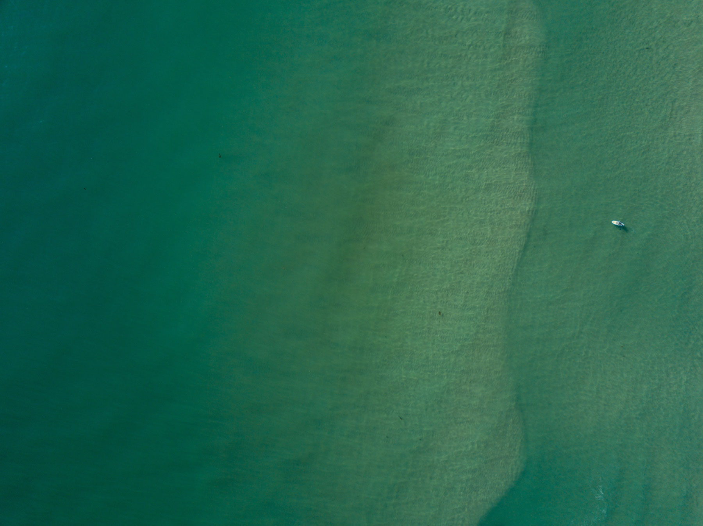
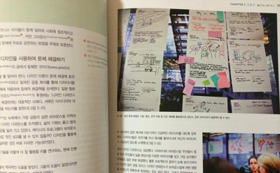
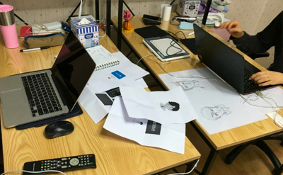
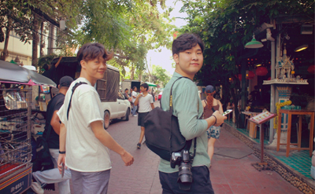
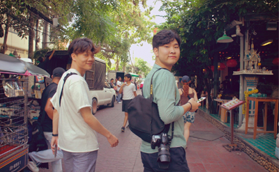
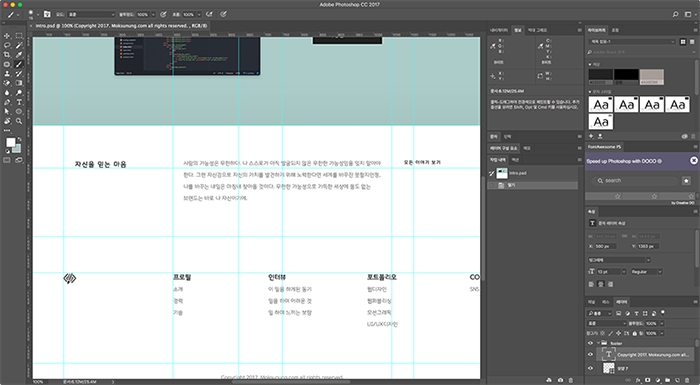

상상을 디자인하라. 더욱 아름답게. 보다 산뜻하게.
때를 만난 아이디어보다 더 강한 것은 없다. 웃음은 시대를 초월하고 상상력에는 나이 제한이 없고 그리고 꿈은 영원하다.
인용구
생각하는 대로 살지 않으면 사는 대로 생각하게 된다.
이 웹사이트는
이 웹사이트에 방문해주신 여러분, 환영합니다. 이 곳은 웹크리에이터 목선웅의 개인 PR사이트입니다. 제가 전하고 싶은 이야기들로 최대한 재미있게 보실 수 있도록 노력하며 채웠습니다. 재미있게 둘러봐주시면 좋겠습니다.INTRO 페이지 : 약력, 기술, 능력 소개 INTERVIEW 페이지 : 웹에 대한 인터뷰 PORTFOLIO 페이지 : 작업 내역과 작업물 소개 CONTACT 페이지 : 연락할 수 있는 연락처와 SNS 링크 CREDIT 페이지 : 이 웹사이트에 사용한 기술과 재료
아직 부족한 점이 많으나 열심히 준비했습니다.편안하게 살펴주시면 감사하겠습니다. ^^
저를 소개합니다.
저는 웹크리에이터 목선웅입니다.안경사로 사회에 첫발을 딛었고 꿈을 찾아 웹에 인문하였으며 몇몇의 IT회사를 거쳐 현재는 코드랩이라는 아이디어 팀을 만들어 작업실에서 프리랜서로 작업하고 있습니다. 주로 HTML5와 CSS3로 웹 문서를 마크업하고 jQuery를 이용해 웹사이트에 역동적인 숨결을 불어넣는 일을 하고 있습니다. 필요에 따라서는 그래픽툴을 이용한 그래픽 작업이나 에프터이펙트를 이용한 영상 작업도 합니다. 제 목표는 많은 사람들에게 도움이 되고 긍정적인 영향을 주는 크리에이터가 되는 것입니다. 앞으로도 영향력이 있는, 긍정적인 영감을 주는 크리에이터가 되기 위해서 우직하게 노력해 나아가겠습니다. 방문해주셔 감사합니다.
웹 크리에이터 목선웅

내가 걸어온 길
사회라는 거대한 탑 속에서탑을 이루는 하나의 벽돌로 존재할 수 있도록 도와준 소중한 교육과 경험의 순간들.
-
성수고등학교
2003년 성수고등학교 입학
2학년, 인문계로 진학
3학년, 3-3 학급실장
2006년 졸업 -

서울보건대학
2006년 서울보건대 입학
과내 치어리더 응원단 '옵틱이글스' 입단
2008년 대학명 변경 '을지대학교 성남캠퍼스'
치어리더 응원단 동아리 '옵틱이글스' 부단장 역임
2010년 보건전문학사 취득
2010년 안경사면허 취득 -
피카소안경원
2010년 안경사 취업
직장인밴드 '음악과 사람' 드러머로 활동
2012년 퇴사 후 2014년까지 파티타임 근무

-

춘천직업전문학교
eBook I제작 교육 이수
Adobe 프로그램 포토샵, 일러스트레이터, 플래시, 에프터이펙트, 드림위버, 인디자인 교육 이수.
2014.05 GTQ포토샵2급 한국생산성본부(KPC)
2014.06 DIAT프리젠테이션(고급) 한국정보통신진흥협회
2014.06 DIAT워드프로세서(고급) 한국정보통신진흥협회
2014.04 DIAT멀티미디어제작(고급) 한국정보통신진흥협회 -
주식회사 나사로
2014년 신입사원 입사
다수의 프로젝트 웹사이트 기획, 디자인, 퍼블리싱
(인천동부해바라기센터, (주)글로벌강원무역B2C, B2B쇼핑몰, 강원도청 사무기기 관리시스템, 인천동부해바라기센터, (주)글로벌강원무역 B2C, B2B쇼핑몰, DMZ힐링우드사업단, 강원도경로당광역센터, 인천동부해바라기센터, (주)글로벌강원무역 B2C, B2B쇼핑몰, 춘천시청 보건위생 자율점검 시스템)
2016년 대리 퇴사.
-

비영리 아이디어 팀 '코드랩' 창설
웹디자인, 출판디자인, 프론트엔드 개발 관련 스터디 및 비영리 프로젝트 진행 http://allthatcode.com -
주식회사 알플레이
2016년 8월 15일 경력 프론트엔드 개발팀 입사.
글로벌 프로젝트 '트래블씨드' 초기 버전 프론트엔드 개발
2017년 3월 알플레이 퇴사. 

-
그리고 미래
꿈을 향해 나아가는 제 다음 행선지는 어디가 될까요?



가지고 있는 재능
-
웹사이트기획
웹사이트 제작에 투입되는 모든 작업은 기획의 영향을 받기에 클라이언트가 원하는 바를 이룰수 있도록 하기위한 기획을 만드는데 역점을 둡니다. -
일러스트레이션
정보이해를 돕기 위한 일러스트 이미지를 제작합니다. 간단한 아이콘에서부터 캐리커쳐, 도식화 챠트 등을 일러스트 이미지로 제작합니다. -
이미지 제작
아름다운 외형 뿐만 아니라 디자인을 통한 효율적인 정보 전달에 목적을 두어 디자인합니다. 웹사이트 제작에 필요한 타이포그라피, 아트웍, 레이아웃, 배너 등을 제작합니다. -
웹사이트 퍼블리싱
웹표준을 준수하고 웹접근성을 고려하여 퍼블리싱합니다. 시멘틱한 레이아웃을 제작하여 포털엔진이 웹사이트의 구조 해석을 원활히 할 수 있도록 합니다. 또한 최신 웹 퍼블리싱 기법을 통해 웹 트렌드와 모바일디바이스에 대응합니다. -
UI/UX 개발
Jquery를 이용한 동적인 인터페이스를 제작하여 웹사이트 방문객의 편의성 향상을 모색합니다. 비동기적으로 데이터를 처리하여 웹사이트가 사용자에게 주는 동작 부담을 최소화합니다. -
모션그래픽
방문자에게 정보를 효과적으로 전달을 위해 영상 컨텐츠를 제작합니다. 영상에 사운드, 자막, 효과를 삽입하거나 2D 일러스트를 이용해 애니메이션을 제작합니다.